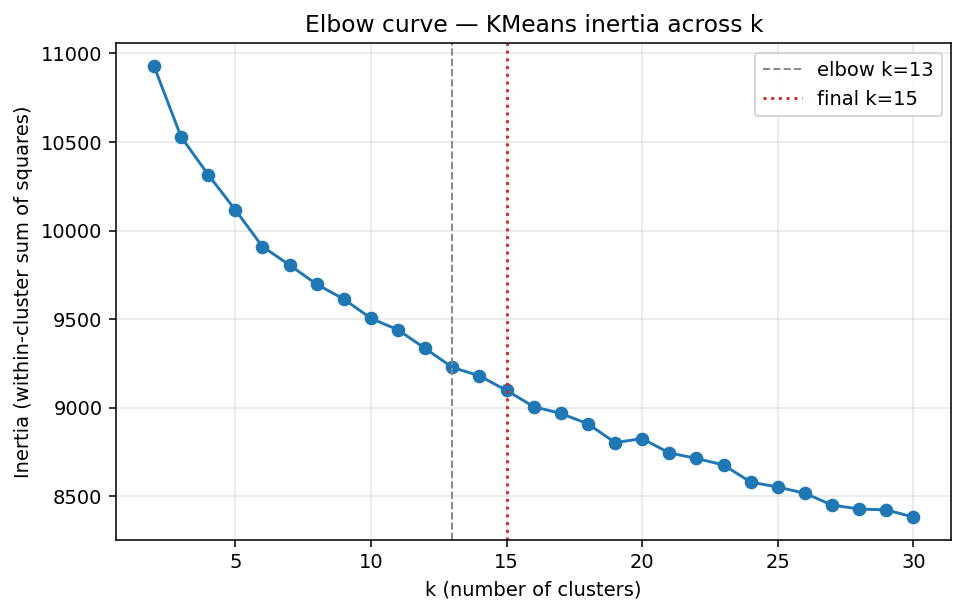
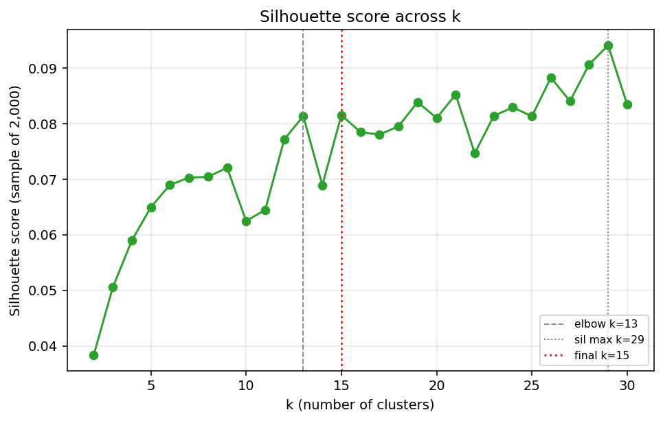
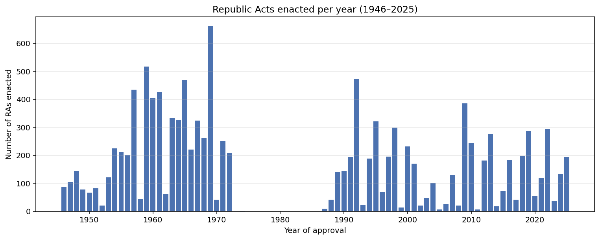
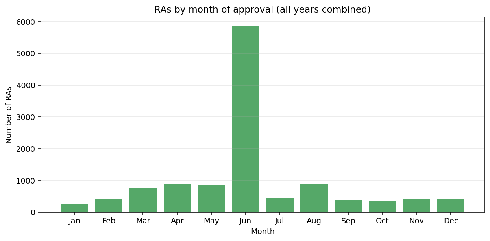
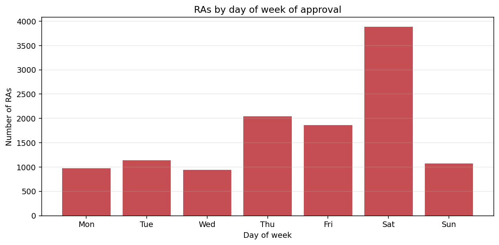

Corpus provenance
The curated corpus combines three sources in three formats: BetterGov.ph (Parquet), Lawphil (HTML requiring DOM parsing), and the Supreme Court E-Library (JSON via a POST endpoint with a CSRF handshake). Each source is retrieved through a distinct pipeline and a distinct parsing strategy.
The E-Library source contributes fields, not rows: a Policy B gap-fill recovered 4,159 approval dates, reducing the null rate from 35.23% to 0.48% (58 nulls of 11,969). That recovery is what makes the date-level EDA below possible.
Method
Documents are vectorized from the pre-normalized
content_normalized column using
TfidfVectorizer(max_features=5000, min_df=5, max_df=0.3,
stop_words="english"). The max_df=0.3 cutoff
removes corpus-wide boilerplate (e.g. section,
provided, republic) that would otherwise dominate a
generic "legislative language" cluster.
The three mega-statutes RA-386 (Civil Code), RA-5050, and RA-8424 (NIRC amendments) are excluded from the TF-IDF fit only — they exceed 500K characters each and would otherwise pull every centroid toward codified-statute vocabulary. They remain in the curated parquet.
K-Means is fit for k = 2..30; both inertia (elbow) and
silhouette on a 2,000-point sample are recorded. The final
k = 15 is chosen by an elbow/silhouette consensus rule:
if the global silhouette maximum is a noise spike (margin < 0.02
over the elbow-adjacent peak), the elbow-adjacent peak is used.
Here the silhouette curve is flat past k = 13, so the
elbow-adjacent peak (k = 15) was chosen
(reason = silhouette_flat_near_elbow). The global silhouette maximum
was at k = 29.
For visualization, the TF-IDF matrix is reduced by
TruncatedSVD(n_components=50) and then projected to 2D
with TSNE(perplexity=30, init="pca", random_state=42).
Silhouette is computed on a sample of 2,000 documents
to keep the O(n^2) cost tractable.
Cluster-count selection


Corpus similarity — t-SNE projection
Each dot is one Republic Act. Hover over any point to see its
ra_id, year, and title. Colors correspond to K-Means
cluster assignments.
Cluster themes and representative acts
For each cluster: the assigned human-readable theme, its size, its year range, its top-10 TF-IDF terms, and the three Republic Acts closest to the cluster centroid. Cluster themes are hand-assigned from the term lists; the term data itself is machine-generated.
| ID | Theme | Size | Years | Top terms | Representative RAs |
|---|---|---|---|---|---|
| C0 | Provincial government & fiscal offices | 437 | 1946–2004 | barrios, mayor, fiscals, assistant, new, provincial, san, creating, sixteen, seat | RA-1212 (1955) — An Act Creating the Municipality of San Jose, Province of Negros Oriental RA-4748 (1966) — An Act Creating the Municipality of Kiblawan, Province of Davao RA-5659 (1969) — Republic Act No. 5659 |
| C1 | Telecom station permits | 346 | 1949–1972 | radio, stations, grantee, point, permit, temporary, land, private, assigns, operate | RA-5245 (1968) — An Act Granting Alberto Rodriguez a Temporary Permit to Construct, Maintain and Operate Privatized Fixed Point RA-4457 (1965) — An Act Granting the Central Azucarera De Bais a Temporary Permit to Construct, Maintain and Operate Private Fi RA-4597 (1965) — An Act Granting F.K. Belleza a Temporary Permit to Construct, Maintain and Operate Private Fixed Point-to-Poin |
| C2 | Community education & sports | 1,667 | 1949–2025 | high, barangay, education, annex, sports, appropriating, culture, establishing, issue, originated | RA-10194 (2012) — AN ACT SEPARATING THE BANAYBANAY NATIONAL HIGH SCHOOL LEANDRO G. JAPOS HIGH SCHOOL ANNEX IN BARANGAY PISO, MUN RA-9788 (2009) — AN ACT SEPARATING THE MABA-AY NATIONAL HIGH SCHOOL - BANSA ANNEX IN BARANGAY BANSA, MUNICIPALITY OF BAUKO MOUN RA-9664 (2009) — AN ACT SEPERATING THE PANTBANGAN NATIONAL HIGH SCHOOL GANDUZ ANNEX IN BARANGAY GANDUZ, MUNICIPALITY OF PANTABA |
| C3 | Hospital appropriations | 459 | 1946–2025 | hospital, emergency, maintenance, appropriated, sum, health, medical, establishment, fiscal, bed | RA-5225 (1968) — An Act Providing for the Establishment of an Emergency Hospital in the City of Tangub, and Authorizing the App RA-2693 (1960) — An Act Providing for the Establishment of an Emergency Hospital in the Municipality of Sogod, Province of Leyt RA-4957 (1967) — An Act Converting Abuyog Emergency Hospital in the Municipality of Abuyog, Province of Leyte, into Abuyog Gene |
| C4 | School name changes | 305 | 1953–2025 | elementary, changing, changed, memorial, central, barangay, integrated, 1989, norte, san | RA-4404 (1965) — An Act Changing the Name of Ticulon Elementary School in the Municipality of Malita, Province of Davao, to Tor RA-6838 (1990) — An Act Changing the Name of the Suop Elementary School in Barangay Igangon, Municipality of Asuncion, Province RA-3505 (1962) — An Act Changing the Name of the Tinio-an Elementary School in the Municipality of Cabanatuan, Province of Iloi |
| C5 | Infrastructure, courts & holidays | 1,097 | 1947–2025 | district, city, road, court, holiday, office, lto, engineering, nonworking, special | RA-11437 (2019) — An Act Establishing a Regular District Office of the Land Transportation Office (LTO) in the Municipality of R RA-12130 (2025) — AN ACT CONVERTING THE LAND TRANSPORTATION OFFICE URDANETA DISTRICT OFFICE INTO A CLASS "A" DISTRICT OFFICE, RE RA-11743 (2022) — Eighteenth Congress Third Regular Session |
| C6 | City charters | 297 | 1946–2023 | city, mayor, ordinance, sangguniang, panlungsod, duties, officer, powers, ordinances, board | RA-5502 (1969) — AN ACT REVISING REPUBLIC ACT NUMBERED THIRTY-TWO HUNDRED AND SEVENTY-EIGHT OTHERWISE KNOWN AS THE CHARTER OF T RA-4354 (1965) — AN ACT TO REVERSE THE CHARTER OF THE CITY OF DAVAO AND FOR OTHER PURPOSES RA-9393 (2007) — AN ACT CONVERTING THE MUNICIPALITY OF LAMITAN IN THE PROVINCE OF BASILAN INTO A COMPONENT CITY TO BE KNOWN AS |
| C7 | Hospital bed expansion | 429 | 1957–2025 | hospital, bed, capacity, beds, health, 1992, infirmary, increased, 1991, district | RA-7415 (1992) — AN ACT INCREASING THE BED CAPACITY OF THE CADIZ DISTRICT HOSPITAL FROM A TWENTY-FIVE-BED CAPACITY TO A ONE HUN RA-7312 (1992) — Fifth Regular Session RA-7207 (1992) — AN ACT INCREASING THE BED CAPACITY OF THE MARGOSATUBIG DISTRICT HOSPITAL FROM TWENTY-FIVE (25) TO FIFTY (50) B |
| C8 | Barrio creation | 648 | 1947–1972 | barrio, sitio, sitios, san, creating, constituted, barrios, changing, changed, converted | RA-2592 (1959) — An Act Creating Certain Barrios in the Province of Camarines Sur RA-1733 (1957) — An Act Changing the Names of Certain Barrios in the Municipality of Sara, Province of Iloilo RA-3354 (1961) — An Act to Change the Names of Certain Barrios in the Municipality of Sara, Province of Iloilo |
| C9 | Agricultural & vocational appropriations | 745 | 1946–2015 | appropriated, sum, maintenance, appropriation, nineteen, vocational, treasury, fisheries, agricultural, director | RA-2414 (1959) — An Act Authorizing the Appropriation of the Sum of Two Hundred Thousand Pesos for the Operation and Maintenanc RA-4298 (1965) — An Act Authorizing the Appropriation of Three Hundred Thousand Pesos for the Operation and Maintenance of Caba RA-2409 (1959) — An Act Authorizing the Appropriation of the Sum of One Hundred Fifty Thousand Pesos for the Operation and Main |
| C10 | State universities & colleges | 279 | 1949–2025 | college, university, board, state, ched, education, faculty, polytechnic, academic, trustees | RA-8292 (1997) — AN ACT PROVIDING FOR THE UNIFORM COMPOSITION AND POWERS OF THE GOVERNING BOARDS, THE MANNER OF APPOINTMENT AND RA-9744 (2009) — AN ACT CONVERTING THE CEBU STATE COLLEGE OF SCIENCE AND TECHNOLOGY SYSTEM IN THE CITY OF CEBU STATE COLLEGE OF RA-10597 (2013) — Fifteenth Congress Third Regular Session |
| C11 | Electric franchises | 315 | 1947–1992 | electric, heat, power, light, franchise, thirty, grantee, numbered, maintain, operate | RA-2328 (1959) — An Act Granting Marcelo Secuya a Franchise for an Electric Light, Heat and Power System in the Municipality of RA-1354 (1955) — An Act Granting Adolfo A. Caubang a Franchise for an Electric Light, Heat and Power System in the Municipality RA-2322 (1959) — An Act Granting the Municipality of Babac, Province of Davao, a Franchise for an Electric Light, Heat and Powe |
| C12 | Numbered amendments (boilerplate) | 3,947 | 1946–2025 | numbered, republic, 00, board, 000, follows, read, philippine, commission, development | RA-3500 (1962) — Republic Act No. 3500 RA-2700 (1960) — Republic Act No. 2700 RA-2080 (1958) — Republic Act No. 2080 |
| C13 | Broadcasting franchises | 827 | 1949–2025 | grantee, franchise, stations, broadcasting, radio, use, broadcast, telecommunications, facilities, corporation | RA-8217 (1996) — AN ACT GRANTING CELEBES SEA BROADCASTING CORPORATION, A FRANCHISE TO CONSTRUCT, INSTALL, ESTABLISH, OPERATE AN RA-8222 (1996) — AN ACT GRANTING THE DIOCESE OF LAOAG A FRANCHISE TO CONSTRUCT, INSTALL, ESTABLISH, OPERATE AND MAINTAIN RADIO RA-8603 (1998) — AN ACT GRANTING THE EXODUS BROADCASTING CO., INC., A FRANCHISE TO CONSTRUCT, INSTALL, ESTABLISH, OPERATE AND M |
| C14 | Ice plant franchises | 168 | 1956–1972 | ice, grantee, cold, franchise, storage, plant, commission, appurtenances, operate, granted | RA-5419 (1968) — An Act Granting Lourdes E. Bengzon a Franchise to Construct, Operate and Maintain an Ice Plant and Cold Storag RA-5394 (1968) — An Act Granting Herminio S. Pilar a Franchise to Construct, Operate and Maintain an Ice Plant and Cold Storage RA-5136 (1967) — An Act Granting Joaquin Regis Tan a Franchise to Construct, Maintain and Operate an Ice Plant and Cold Storage |
Temporal patterns
With approval_date now 99.5% populated, three
date-level views become possible.



Limitations
- Silhouette = 0.0815 is weak but non-trivial. Text clustering without embeddings rarely exceeds 0.1; values below 0.05 would indicate no meaningful structure.
- Cluster C12 captures numbered line-item amendment boilerplate rather than a policy theme. This is a known limitation of bag-of-words representations on template-heavy legal text.
- t-SNE distances between clusters are not interpretable; only local neighborhoods are preserved.
- The Saturday concentration in the day-of-week chart (~33% of enacted dates) replicates across both source datasets — 33.8% in the original BetterGov dates and 30.5% in the E-Library-recovered dates. This rules out a single-source parsing artifact and suggests a systemic convention in how RA approval dates are recorded or published.